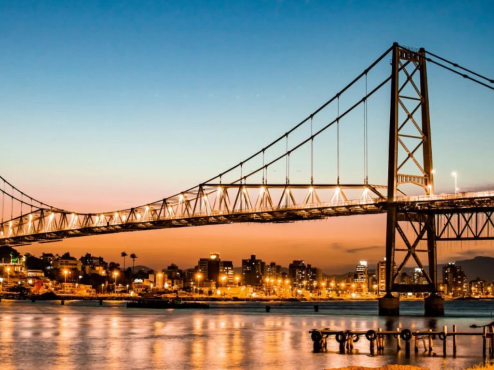

O Santa Catarina completa a Região Sul apresentando um dos índices de desenvolvimento humano (IDH) mais elevados do Brasil, sendo marcado por uma geografia rica e diversificada. O estado é mundialmente famoso por seu litoral, que mescla praias paradisíacas em cidades como **Florianópolis**, a capital situada majoritariamente em uma ilha, e Balneário Camboriú, conhecida por seus grandes arranha-céus. No interior, o relevo se eleva para o Planalto Serrano, onde cidades como São Joaquim registram as temperaturas mais baixas do país, incluindo ocorrências frequentes de neve. Economicamente, o estado possui uma indústria têxtil e metalomecânica fortíssima, além de um setor portuário vital para o comércio exterior. A forte herança de colonos alemães e italianos é um pilar da cultura local, influenciando festivais famosos como a Oktoberfest de Blumenau e a arquitetura enxaimel que decora diversas cidades do Vale do Itajaí.
